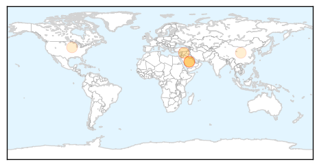
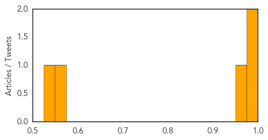
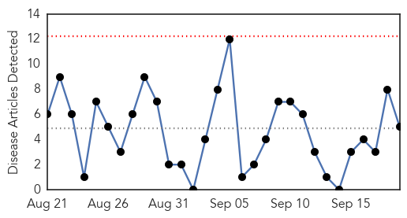
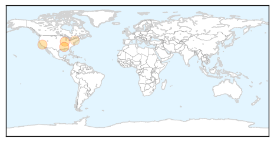

MERS
30-Day Web Trend
3 alerts, 1 warnings

30-Day Twitter Trend
4 alerts, 0 warnings

Article Locations
Article Confidences
Top Articles:
Top Tweets:
- 0.663
- RT: WHO travel advice on Middle East respiratory syndrome coronavirus for pilgrimages http://t.co/Bf3Dt0WTDM MERS
West Nile Virus
30-Day Web Trend
0 alerts, 0 warnings

30-Day Twitter Trend
2 alerts, 0 warnings

Article Locations
Article Confidences

Top Articles:
Top Tweets:
- 0.571
- Flavivirus news: Suffolk: 176 mosquito samples have tested positive for West Nile virus - Newsd... http://t.co/fq45D1XhIS pathogenposse